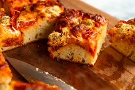

Home
Focaccia

Description
Focaccia is a dimpled, flat shaped Italian bread generously flavoured with olive oil and herbs
Ingredients
- 1 2/3 cups bread flour
- 4 tsp white sugar
- 1 1/4 tsp salt
- 1 tsp instant / rapid rise yeast
- 3/4 cup very warm water
- 1 1/2 tbsp extra virgin olive oil
Recipe
- Mix dry ingredients
- Mix wet ingredients
- Combine dry and wet ingredients
- Let dough rest for 2 hours
- Bake in oven at 350F for 20 Minuets